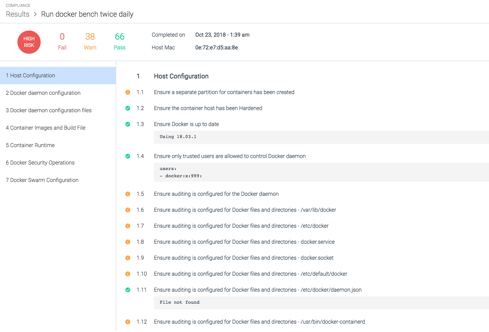
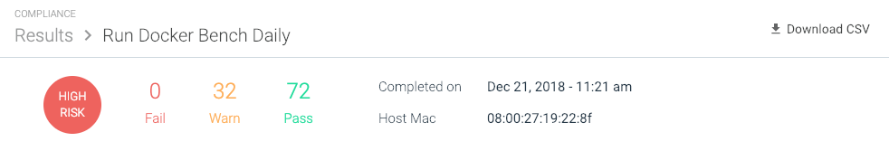
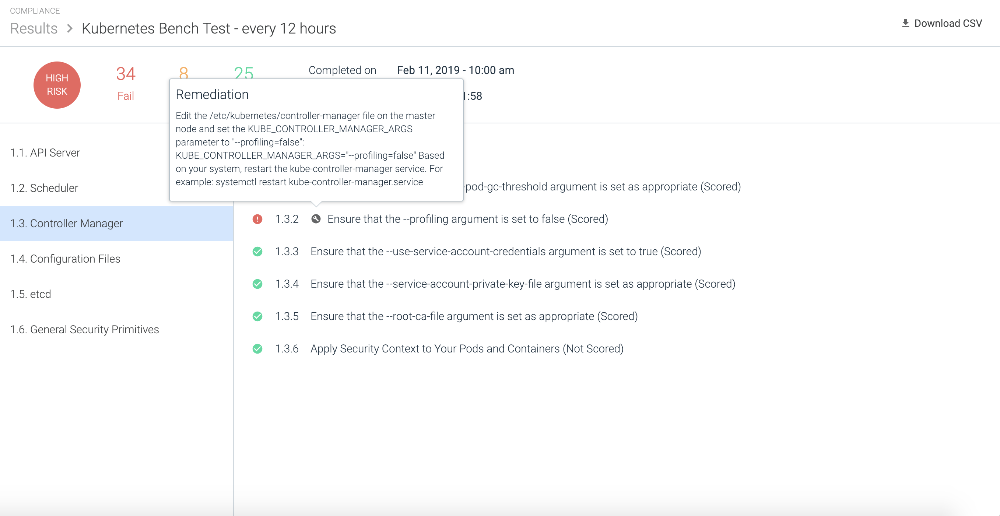

**Review Compliance Results**
<intro>
Contents
Review Task Results
Results from completed tasks can be reviewed from the Results page, by clicking on an individual task from the list. Opening a task displays the Test Results page for either Kubernetes or Docker (as appropriate), and provides a detailed report as to how the node performed against the benchmark tests.
The sections below provide screenshots of example benchmark results, and a link to the specific CIS benchmark results document download page. For more information about CIS practices, refer to https://www.cisecurity.org/.
Note
As shown in the Docker section below, some results have code blocks beneath them. These provide detailed information that users can copy and paste into support tickets should an issue arise, to assist the support team in finding the issue quickly.
Note
When a compliance test fails, an error log is displayed in place of the task results.
Search Test Results
The Results page can be searched/filtered using the search bar functionality at the top of the page:
 |
Identify the Kubernetes Master Node
The Kubernetes master node can be identified by the Kubernetes Master label applied to the results entry on the Results tab:
 |
Kubernetes Benchmark Test Results
 |
Note
For the complete CIS Kubernetes Benchmark documentation, refer to https://www.cisecurity.org/benchmark/kubernetes/.
Supported Kubernetes Versions
Sysdig supports Kubernetes compliance benchmark tests for the following Kubernetes distributions:
Kubernetes versions 1.6, 1.7, 1.8, 1.11
Note
Sysdig supports Kubernetes compliance benchmark tests for multiple versions of Kubernetes, as defined in the following CIS Benchmarks:
CIS Benchmark 1.0.0 (Kubernetes version 1.6)
CIS Benchmark 1.1.0 (Kubernetes version 1.7)
CIS Benchmark 1.2.0 (Kubernetes version 1.8)
CIS Benchmark 1.3.0 (Kubernetes version 1.11)
For versions between these supported milestones, the tests will fall back to earlier milestone versions.
Amazon Elastic Container Service for Kubernetes (Amazon EKS) default cluster version
Google Kubernetes Engine (GKE) default cluster version
IBM Kubernetes Service
Openshift versions 3.10, 3.11
Rancher
Docker Benchmark Test Results
|  |
Note
For the complete CIS Docker Benchmark documentation, refer to https://www.cisecurity.org/benchmark/docker/.
Download Task Results
CIS compliance task results can be downloaded as a .CSV file:
From the Compliance module, navigate to the
Resultspage.Select the relevant task.
Click the Download CSV button:

Remediation Information
Sysdig provides remediation steps for each non-passing test in the benchmark, allowing users to identify the changes required to the environment to resolve the issues found.
To view the remediation information:
From the
Compliancemodule, click the relevant compliance benchmark test to open the results.Identify the desired test result by navigating to the results tab and scrolling to the test line.
Move the mouse cursor over the wrench icon beside the test result to open the remediation information text pop up.

The pop up information is a generic summary of what is usually required to resolve the issue. This information is not environment specific, and should be used as a guide, rather than specific configuration instructions.
Note
The remediation information is included when the report is downloaded as a .CSV file, allowing users to see all of the required configuration changes to remedy the found issues.